Moeda e Valorização
A moeda oficial da Venezuela é o Bolívar Soberano (VES). Em comparação com o Real Brasileiro (BRL), o valor do Bolívar tem sofrido grande desvalorização devido à instabilidade econômica. No câmbio atual, 1 BRL equivale a aproximadamente 6,85 VES, mas essa taxa pode variar.
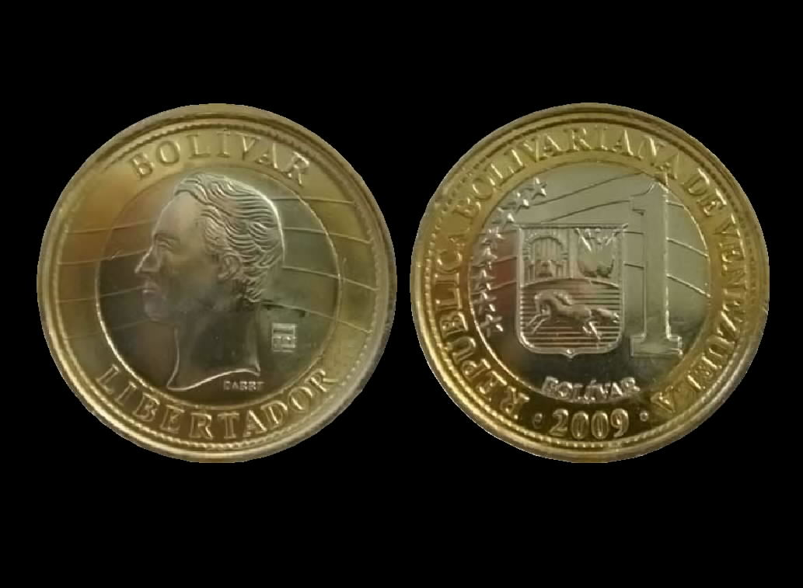Modos de Transporte
Na Venezuela, os principais modos de transporte incluem ônibus, táxis, metrô (principalmente em Caracas), e serviços de transporte por aplicativo. O transporte aéreo é comum para viagens entre cidades distantes devido à extensão territorial do país. Além disso, existem opções de transporte ferroviário e marítimo para certas regiões.
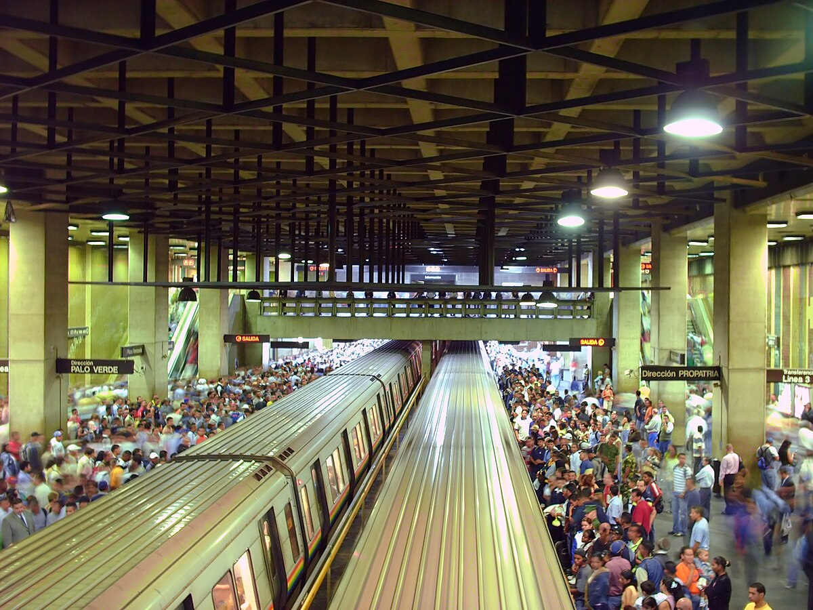Hospedagem
Uma ótima opção de hospedagem é o Hotel Humboldt, localizado no Parque Nacional Waraira Repano, oferecendo uma vista panorâmica de Caracas e um serviço de primeira classe. Outra opção é o Hotel Alba Caracas, conhecido por seu conforto e localização central.
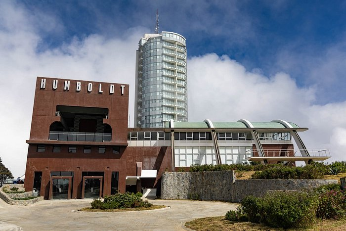Passeios na Venezuela
- Parque Nacional Canaima: Aventure-se nas belezas naturais e nas cachoeiras espetaculares, incluindo o famoso Salto Ángel, a maior queda d'água do mundo. 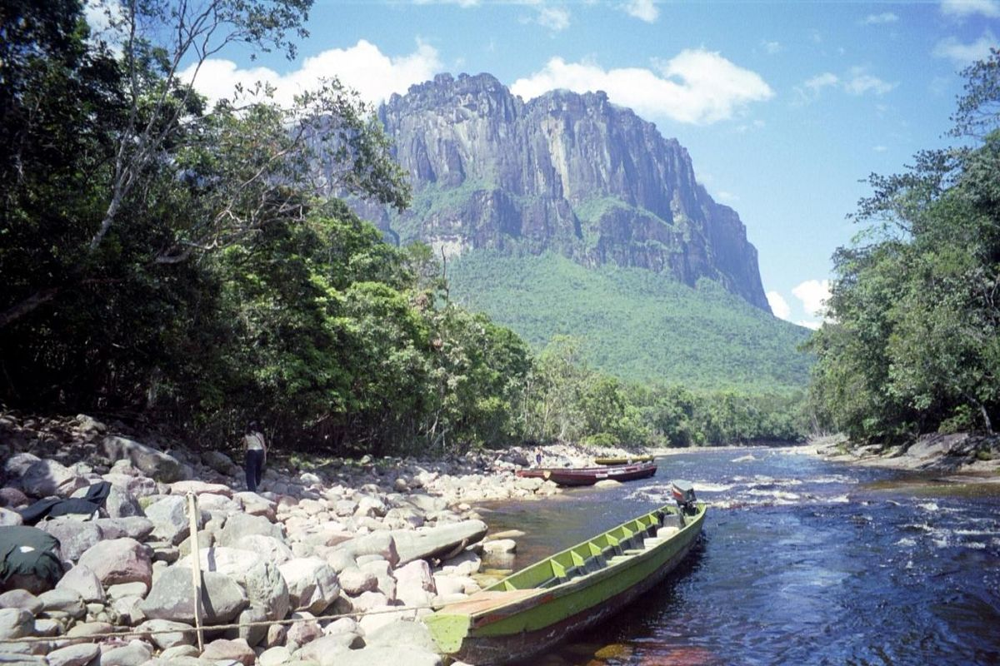
- Los Roques: Um arquipélago paradisíaco perfeito para mergulho e relaxamento nas praias de águas cristalinas. 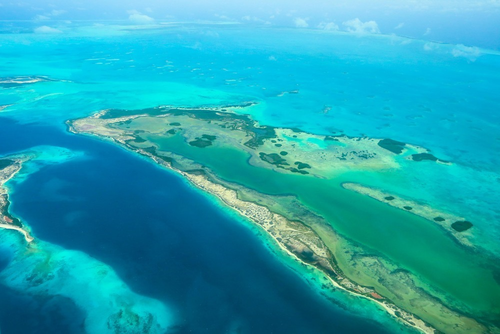
- Ilha de Margarita: Conhecida por suas praias e infraestrutura turística, é um ótimo local para esportes aquáticos e compras. 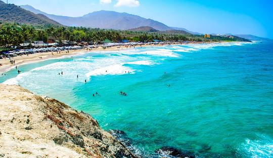
- Parque Nacional Morrocoy: Famoso por suas praias e recifes de corais, oferece uma rica biodiversidade. 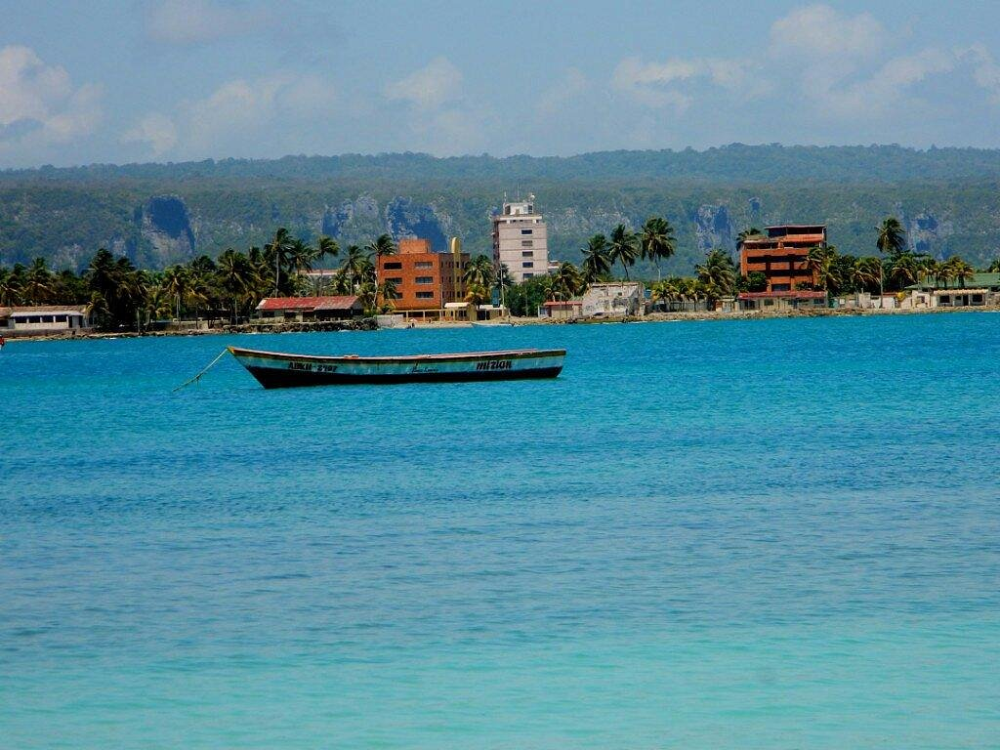
- Teleférico de Mérida: O teleférico mais alto e longo do mundo, proporcionando vistas deslumbrantes da Cordilheira dos Andes. 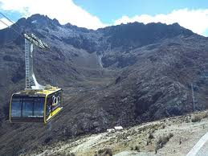
Comidas e Bebidas Típicas
- Arepas: Pães feitos de massa de milho, recheados com diversos ingredientes. 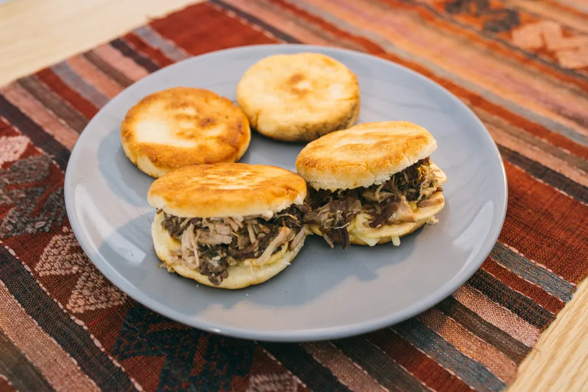
- Pabellón Criollo: Prato tradicional composto por arroz, carne desfiada, feijão preto e banana frita. 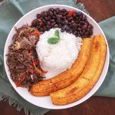
- Chicha Andina: Bebida fermentada feita de arroz, açúcar e canela. 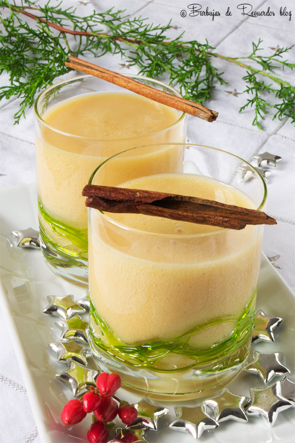
- Tequeño: Bolinho de queijo frito, geralmente servido como aperitivo. 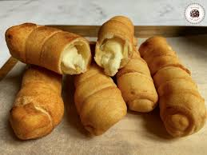
- Cachito: Bebida tradicional feita de milho e leite. 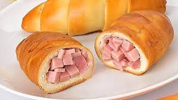
Pontos Turísticos e Suas Histórias
- Salto Ángel: Nomeado em homenagem ao aviador americano Jimmie Angel, que descobriu a queda em 1933. 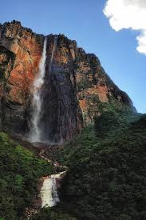
- Castillo de San Carlos de Borromeo: Fortaleza histórica em Maracaibo, construída no século XVII. 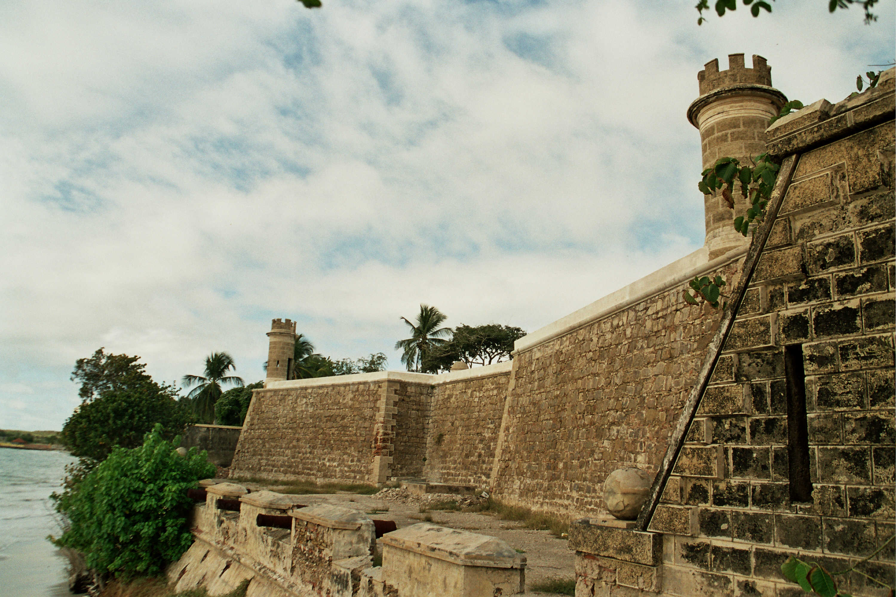
- Catedral de Caracas: Um exemplo impressionante da arquitetura religiosa venezuelana, localizada no coração de Caracas. 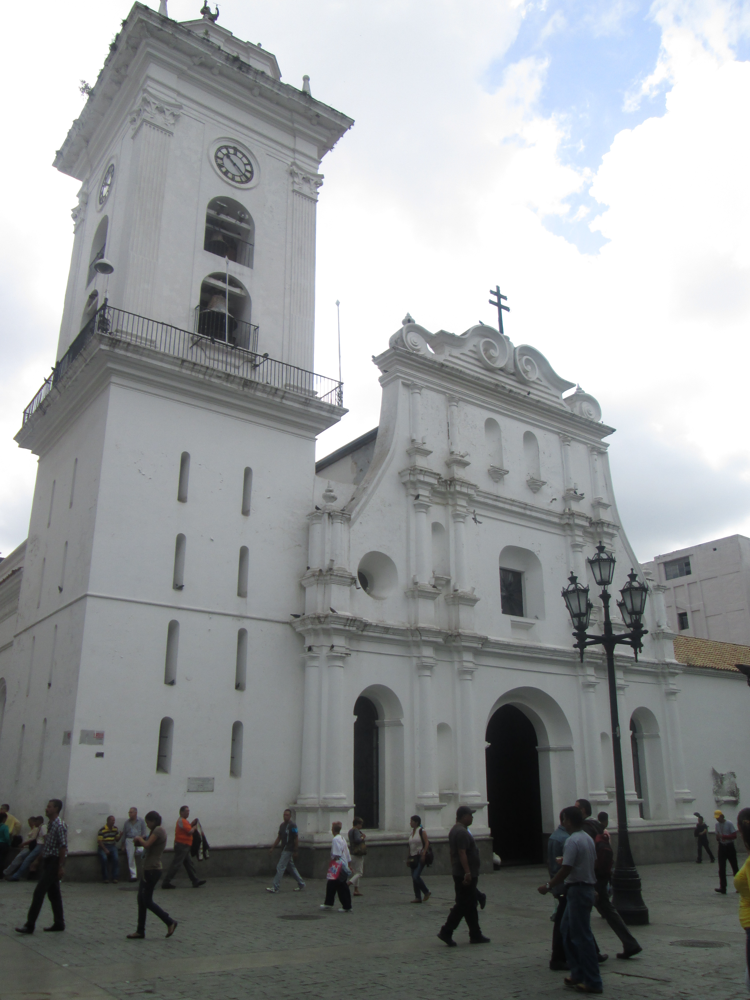
Costumes e Hábitos
Os venezuelanos são conhecidos por sua hospitalidade e alegria. Costumam celebrar festivais com muita música e dança. A família é a base da sociedade e os almoços de domingo são momentos importantes de confraternização. Além disso, é comum que as pessoas se cumprimentem com um aperto de mão e um sorriso.
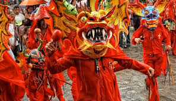Personalidades Venezuelanas
Os venezuelanos são geralmente acolhedores, otimistas e resilientes, mesmo diante de adversidades econômicas. A música e o futebol são paixões nacionais. Personalidades notáveis incluem o escritor Rómulo Gallegos e o ator Edgar Ramírez.
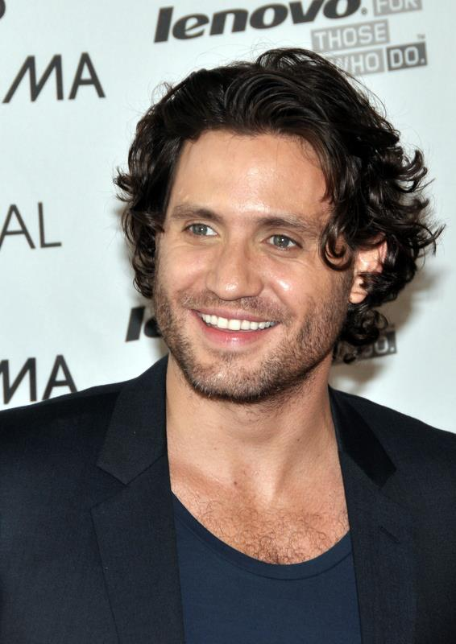Um Autor Venezuelano e Seu Livro
Rómulo Gallegos: Um dos maiores escritores venezuelanos, famoso por seu romance "Doña Bárbara", que retrata a luta entre civilização e barbárie nas savanas venezuelanas.
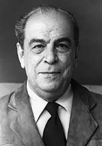Festas e Celebrações
- Carnaval: Celebrado com desfiles vibrantes e festas em todo o país. 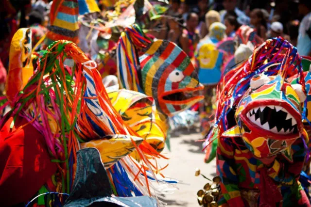
- Dia de San Juan Bautista: Uma celebração afro-venezuelana com música e danças tradicionais. 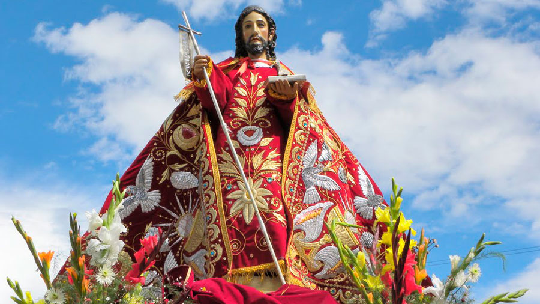
- Feria de La Chinita: Em Maracaibo, celebra a Virgem de Chiquinquirá com eventos culturais e religiosos. 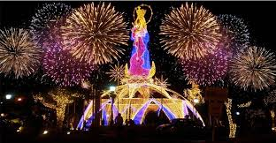